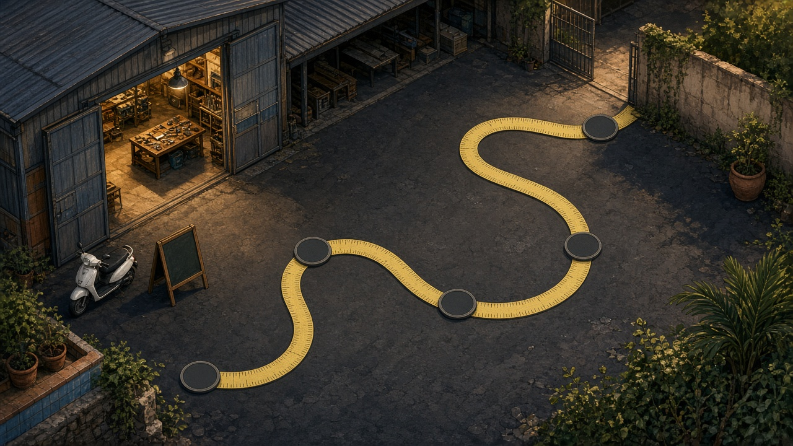

Gioco · nastro nel cortile
Segui il metro
Cinque tappe sul nastro giallo. A ogni disco: una domanda.
Tappa 1/5
Punti 0

Gioco · nastro nel cortile
Cinque tappe sul nastro giallo. A ogni disco: una domanda.
